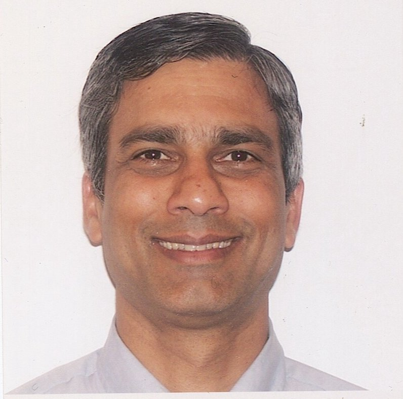

As a Research Staff Member at the IBM Thomas J. Watson Research Center, Yorktown Heights, New York, Nalini K. Ratha lead the biometrics research effort in the area of enhancing security of biometrics systems and performance evaluation of biometrics systems. Currently, he focuses on extending the techniques to build robust and trustworthy AI systems. Over last couple of years, he has conducted several workshops and CVPR/ECCV/ICCV on bias, blockchain and disguised faces in the wild. During CVPR 2020, he is co-organizing a workshop on Trustworthy Vision Systems. He co-edited a book entitled "Domain Adaptation for Visual Understanding" published by Springer in 2020. IEEE Computer (July 2020) special issue on Blockchain has been co-edited by him. He has co-edited two books entitled “Advances in Biometrics: Sensors, Algorithms and Systems” and “Automatic Fingerprint Recognition Systems” published by Springer and co-authored a popular textbook entitled “A guide to Biometrics Selection and System design” published by Springer. In the past, he has been associated with several leading biometrics conference starting with some of the very early biometrics conferences as general co-chair of IEEE AutoID 02 and SPIE Conf. on Biometrics in Human Identification 2004, 2005, co-chair of an associated theme on biometrics at ICPR 2006 and ICPR 2008 and also the co-chair of CVPR workshop on Biometrics 2006-2012, and IEEE Biometrics Theory, Applications and Sytems (BTAS 07 -- BTAS 10).
More recently, he was the general co-chair of BTAS 2016 and ISBA 2017 and 2018 and program co-chair of IJCB 2020. In the past, he served on the editorial board of Pattern Recognition journal and IEEE Trans. on Image Processing. He is a guest co-editor of a special issue on biometrics for IEEE Trans. on SMC-B and also for IEEE Trans. on Information Forensics and Security. He served on the editorial board of IEEE Trans. on Pattern Analysis and Machine Intelligence and IEEE Trans. on Systems, Man and Cybernetics- Part B. Recently, he is involved in co-editing a special issue on Domain Adaptation in Visual Understanding (DAVU) for Pattern Recognition journal. He has received several patent awards and a “Research Division” award and an “Outstanding Technical Innovation Award” at IBM and named a “Master Inventor” at IBM Research in 2018. He continues to teach at Cooper Union and NYU-Poly as an Adjunct professor for last several years. He served as the President of the IEEE Biometrics Council from Jan 2011-Dec 2012 and currently serves as the nomination chair for the IEEE Biometrics Council. He has served on advisory board of EU-INGRESS and EU-Fidelity and served on several NSF evaluation panels.
He received his Ph. D. from the Department of Computer Science at Michigan State University and B.Tech in Electrical Engineering and M. Tech in Computer science and Engineering from Indian Institute of Technology, Kanpur. He is a Fellow of IEEE, Fellow of IAPR and ACM Distinguished Scientist.
His current research interests include Trustworthy AI, Fairness and bias in AI and vision systems, biometrics, computer vision, pattern recognition and special purpose architecture for computer vision systems. In 2019, he won the IEEE Biometrics Council Leadership award.